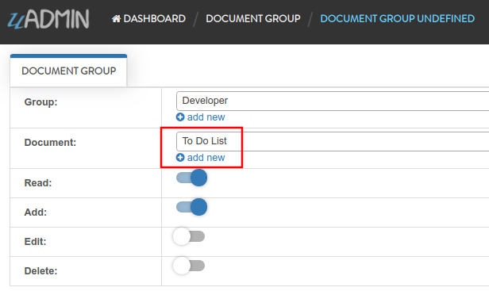
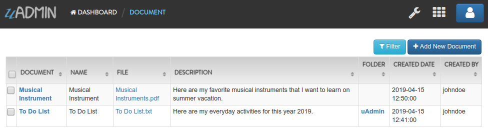

Document System Tutorial Part 15 - Schema List Modifier¶
In this part, we will talk about schema list modifier based on the document list filter that checks the admin status of the user. If it is not an admin, what are the models that user can access to.
First of all, run your application using “admin” account. In the Document System Dashboard, click “DOCUMENT GROUPS”.

Click the existing record that you have.

Change the Document from Computer to To Do List.
Result

Logout your account then login “johndoe” account.

Click “DOCUMENTS”.

If you notice, the document record created by admin is still visible even if we disabled all permission levels that we have discussed earlier.

There is one more step that we have to take to make it record wise and that is Schema List Modifier. List Modifier allows you to modify the schema when rendering a list. It will pass to you the a pointer to the schema so you could modify it and the user access it to be able to customize per user (or per user group).
func(*uadmin.ModelSchema, *uadmin.User) (string, []interface{})
uadmin.ModelSchema has the following fields and their definitions:
Name - The name of the Model
DisplayName - A human readable version of the name of the Model
ModelName - The same as the Name but in small letters.
ModelID - (Data) A place holder to store the primary key of a single row for form processing
Inlines - A list of associated inlines to this model
InlinesData - (Data) A place holder to store the data of the inlines
Fields - A list of uadmin.F type representing the fields of the model
IncludeFormJS - A list of string where you could add URLs to javascript files that uAdmin will run when a form view of this model is rendered
IncludeListJS - A list of string where you could add URLs to javascript files that uAdmin will run when a list view of this model is rendered
FormModifier - A function that you could pass that will allow you to modify the schema when rendering a form. It will pass to you the a pointer to the schema so you could modify it and a copy of the Model that is being rendered and the user access it to be able to customize per user (or per user group).
ListModifier - A function that you could pass that will allow you to modify the schema when rendering a list. It will pass to you the a pointer to the schema so you could modify it and the user access it to be able to customize per user (or per user group).
uadmin.User has the following fields and their definitions:
Username - The username that you can use in login process and CreatedBy which is a reserved word in uAdmin
FirstName - The given name of the user
LastName - The surname of the user
Password - A secret word or phrase that must be used to gain admission to something. This field is automatically hashed for security protection.
Email - A method of exchanging messages between people using electronic devices.
Active - Checks whether the user is logged in
Admin - Checks whether the user is authorized to access all features in the system
RemoteAccess - Checks whether the user has access to remote devices
UserGroup - Returns the GroupName
UserGroupID - An ID to access the UserGroup
Photo - Profile picture of the user
LastLogin - The date when the user last logged in his account
ExpiresOn - The date when the user account expires
OTPRequired - Checks whether the OTP is Active
OTPSeed - Private field for OTP
Exit your application. Go to the main.go. Below the main function, create a DocumentListFilter function that holds s as the uadmin.ModelSchema and u as the uadmin.User. It returns the string and an array of interface. This function implementation is the structure of a ListModifier in ModelSchema.
// DocumentListFilter !
func DocumentListFilter(s *uadmin.ModelSchema, u *uadmin.User) (string, []interface{}) {
// Checks whether the user is not an admin
if !u.Admin {
// Returns the user ID
return "user_id = ?", []interface{}{u.ID}
}
// Returns nothing
return "", []interface{}{}
}
DocumentListFilter is based on the user ID where the admin status is active or not. If the user is not an admin, he has limited access to the models and its records.
Inside the main function, create a Schema List Modifier that calls the Document model. Place it after the RegisterInlines function.
// Initialize docS variable that calls the document model in the schema
docS := uadmin.Schema["document"]
// Assign DocumentListFilter to the Schema List Modifier
docS.ListModifier = DocumentListFilter
// Pass back to the schema of document model
uadmin.Schema["document"] = docS
Now run your application using “johndoe” account.
Click “DOCUMENTS”.
If you notice, the Computer record created by “admin” is no longer visible because “johndoe” is not an admin and has no permission to read that record.
Click on “To Do List”. If you notice, there is no save button on the bottom right corner of the screen because “johndoe” is part of a Developer group and has no Edit access into it.

In the last part of this tutorial, we will discuss about customizing your dashboard and publishing your application for the world to see.